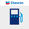

<ion-header>
  <ion-toolbar color="dark">
    <ion-title>{{ resume.name }}</ion-title>
  </ion-toolbar>
</ion-header>

<ion-content class="resume-background ion-padding">
  <ion-grid>
    <ion-row>
      <ion-col size="3">

      </ion-col>
      <ion-col size="6">
        <app-resume-header
          *ngIf="resume"
          [name]="resume.name"
          [headline]="resume.headline">
        </app-resume-header>
      </ion-col>
      <ion-col size="3">
        <ion-thumbnail>
          
        </ion-thumbnail>
        
      </ion-col>
    </ion-row>
  </ion-grid>
  

  <app-resume-contact [contact]="resume.contact"></app-resume-contact>

  <!-- Tabs/Segments for navigation -->
  <ion-toolbar>
    <ion-segment [(ngModel)]="selectedSection" value="summary" scrollable>
      <ion-segment-button value="summary">
        <ion-icon name="document-text-outline"></ion-icon>
        <ion-label>Summary</ion-label>
      </ion-segment-button>
      <ion-segment-button value="skills">
        <ion-icon name="construct-outline"></ion-icon>
        <ion-label>Skills</ion-label>
      </ion-segment-button>
      <ion-segment-button value="certifications">
        <ion-icon name="ribbon-outline"></ion-icon>
        <ion-label>Certs</ion-label>
      </ion-segment-button>
      <ion-segment-button value="experiences">
        <ion-icon name="briefcase-outline"></ion-icon>
        <ion-label>Experience</ion-label>
      </ion-segment-button>
    </ion-segment>
  </ion-toolbar>
  <ng-container *ngIf="selectedSection === 'summary'">
    <app-resume-summary [summary]="resume.summary"></app-resume-summary>
  </ng-container>

  <ng-container *ngIf="selectedSection === 'skills'">
    <app-resume-skills [skills]="resume.skills"></app-resume-skills>
  </ng-container>

  <ng-container *ngIf="selectedSection === 'certifications'">
    <app-resume-certifications [certifications]="resume.certifications">
    </app-resume-certifications>
  </ng-container>

  <ng-container *ngIf="selectedSection === 'experiences'">
    <app-resume-experiences [experiences]="resume.experiences">
    </app-resume-experiences>
  </ng-container>
</ion-content>

<!-- Footer -->
<ion-footer>
  <ion-toolbar color="dark">
    <ion-title size="small" class="footer-text">
      © {{ currentYear }} Michael Yaacoub
    </ion-title>
  </ion-toolbar>
</ion-footer>
